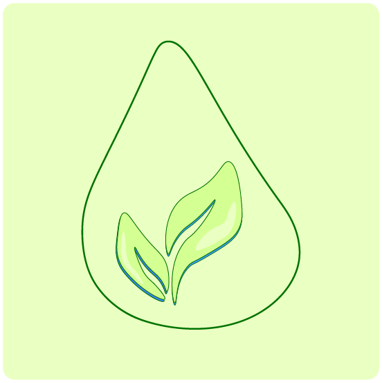
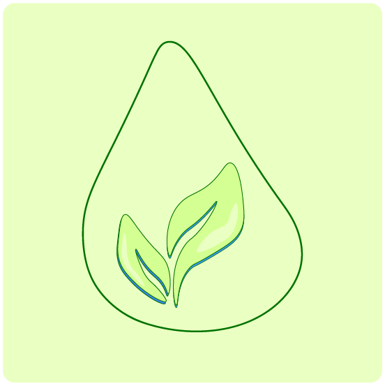

Aanpak
De kadeversterking
De kadeversterking van de Kloveniersburgwal combineert moderne techniek en de natuur. We versterken de kades met duurzame materialen en creëren groene oevers die bijdragen aan meer biodiversiteit en betere waterkwaliteit.
 

Van innovatieve funderingstechnieken tot ecologische waterplanten: de kades zorgen ervoor dat er meer leefgebied bij komt, wat aantrekkelijk is voor vogels, vissen en insecten. De gracht ziet er dus niet alleen mooier uit, het word ook nog eens ecologisch verbetert!

Naast de vergroening van de kade, is er ook aan andere voorzieningen gedacht: fietsenstallingen op de kade. Fietsen kunnen hier op deze manier efficiënt en netjes gestalt worden. Hierdoor is er minder overlast in de buurt van losgeparkeerde fietsen. Ook is er een op- en afstapplaats voor rondvaartbootjes.